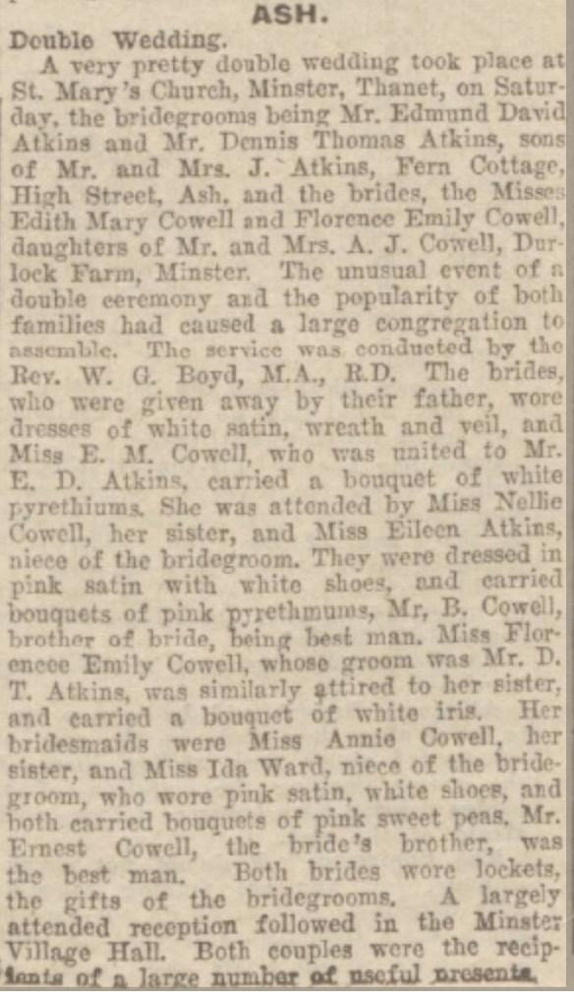

Edith Mary Atkins (née Cowell) 1910 - 1948
[ Home ] | [ Calendar ] | [ Surnames Index ] | [ Family History ]The daughter of Alfred Cowell (a transport driver) and Fanny Austen, Edith Cowell, the first cousin once-removed on the mother's side of <a href="I1.html">Nigel Horne</a>, was born in Stourmouth, Kent, England on Jun 20, 1910<span class="citation">1,2,3</span> and baptized there at All Saints on Sep 4, 1910. She married Edmund Atkins at St Mary the Virgin Church, Minster, Thanet, Kent, England on Jun 4, 1932<span class="citation">5</span>.</p><p>Throughout her life, Edith lived in several places: at Brewery Cottages, Upper Stourmouth, Kent on Apr 2, 1911<span class="citation">6</span>; at Durlock Farm Cottages, Minster in Thanet on Jun 19, 1921<span class="citation">7</span>; and on Kent and Canterbury Hospital, Ethelbert Road, Canterbury, Kent on Sep 29, 1939. <p>She died on Dec 25, 1948 at Durlock Cottage, Minster in Thanet<span class="citation">2,4</span>.
Parents
- Alfred John was born on May 8, 1880
- Fanny was born c. May 1883
Citations
- 1911 England Census Online publication - Provo, UT, USA: Ancestry.com Operations, Inc., 2011.Original data - Census Returns of England and Wales, 1911. Kew, Surrey, England: The National Archives of the UK (TNA), 1911. Data imaged from the National Archives, London, England.
- England & Wales, Death Index: 1984-2005 Online publication - Provo, UT, USA: The Generations Network, Inc., 2007.Original data - General Register Office. England and Wales Civil Registration Indexes. London, England: General Register Office. © Crown copyright. Published by permission of the Cont
- England & Wales, FreeBMD Birth Index, 1837-1915 Online publication - Provo, UT, USA: The Generations Network, Inc., 2006.Original data - General Register Office. England and Wales Civil Registration Indexes. London, England: General Register Office. © Crown copyright. Published by permission of the Cont
- England & Wales deaths 1837-2007 - Findmypast
- England & Wales Marriages 1837-2005 - Findmypast
- 1911 Census for England & Wales - Findmypast (was age 0 and the daughter of the head of the household)
- 1921 Census Of England & Wales - Findmypast (was age 11 and the daughter of the head of the household)
Media
Double Wedding

East Kent Times and Mail - 1 Jan 1949
England & Wales births 1837-2006 - BMD/B/1910/3/AG/000314/087
England & Wales deaths 1837-2007 - BMD/D/1948/4/AZ/000025/022
1939 Register Transcription - TNA-R39-1680-1680H-006-09
1911 England, Wales & Scotland Census Transcription - GBC-1911-RG14-04559-0401-3
1911 England, Wales & Scotland Census Transcription - GBC-1911-RG14-04559-0401-4
England & Wales marriages 1837-2005 Transcription - BMD-M-1932-2-AZ-000214-091
Kent Baptisms - GBPRS/CANT/B/96716794
1921 Census of England & Wales - GBC/1921/RG15/04429/0549/04
Family Tree
Generated by Ged2Site. Last updated on Jul 20, 2025